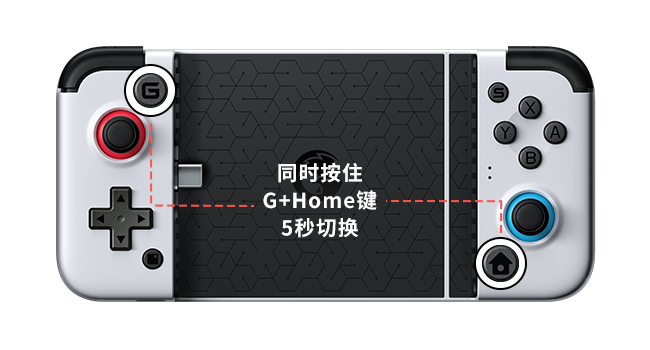
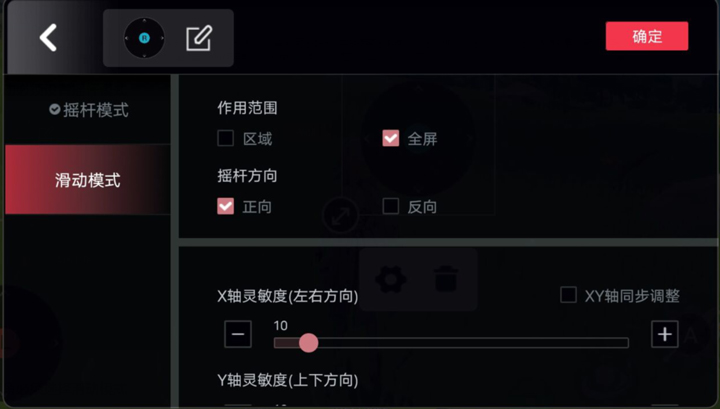

我用了一个晚上才把手柄连上手机——GameSir 新手踩坑实录
买来拉伸手柄想让手机玩游戏舒服点，结果光是连接模式和键位映射就折腾到凌晨。把踩过的坑和摸透的门道一次讲清，给后来人省点时间。
周五晚上八点，我拆开了刚到的 GameSir官网 拉伸手柄。
买它的理由很朴素——手机上玩《和平精英》，屏幕上那几个虚拟按键总让我感觉手指在打架：左手拇指要同时控制移动和蹲趴，右手瞄准的幅度稍微大一点就滑过了头。看朋友用手柄玩了一局，摇杆推方向稳得一批，右摇杆转视角丝滑得像 PC 上的鼠标，我当场就下单了。
结果这个手柄让我从八点折腾到了凌晨一点。
先遇到的是「连不上」
拆开包装，手柄手感确实不错，拉伸结构卡紧手机也挺稳。然后我翻开说明书——厚厚的一本，中英文对照，前三页在讲安全注意事项。我直接翻到"快速开始"那页，跟着做：打开蓝牙，长按 Home 键配对，从下载装了 App，然后……然后手柄按键在游戏里一点反应都没有。
我以为配对没成功，删了重连。还是没反应。又重启手机，还是没反应。九点半的时候我已经在怀疑是不是买到了次品。
后来翻到一个设置叫 G-Touch 模式，说要组合键切换。我按住 G 键加 Home 键等了五秒，手柄上的 LED1 绿灯亮了——对，就是这个灯，说明书上写了但我一开始没注意看。切了模式之后 App 弹出个确认窗口，我点了确认，又开了悬浮窗权限，这才算连上了。
手柄连接手机后，同时按住 G 键加 Home 键约 5 秒切换模式，切换成功后手柄上的 LED1 绿灯常亮。 看到绿灯再往下走，没亮就是没切进去，别往后瞎忙活。

然后是「连上了但键位不对」
手柄按键有反应了，新的问题又来了。左摇杆推一下，角色走两步停住，像触屏被点了一下又松开；右摇杆转视角，镜头只在四个方向之间跳，根本没法连续瞄准。
我以为是手柄坏了，跑到贴吧发帖问。有个老哥回我："摇杆模式和滑动模式搞反了吧？"
哦。原来左摇杆和右摇杆各自有个"模式"属性，而且不能乱选——
- 左摇杆负责移动，必须设为摇杆模式：输出的是连续方向量，就是你在游戏里期望的那种"推哪走哪"
- 右摇杆负责视角，必须选滑动模式：因为手游里转视角的本质是"手指在屏幕上滑动"，右摇杆要模拟的就是这个滑动轨迹
我把左摇杆改回摇杆模式，右摇杆改成滑动模式，点了保存——这时候我才知道，改完设置必须点保存外设，不保存等于没改。再进游戏，摇杆推方向稳了，转视角也顺了，终于能正常玩了。

中间还卡了一下悬浮窗
有一次系统更新之后，游戏里又看不到按键了。检查来检查去，是悬浮窗权限被系统回收了——手机厂商经常在电池优化里把这种"后台常驻"的权限偷偷关掉。
这个权限是键位映射的画布，权限不在，虚拟按键层根本盖不上去。我进系统设置 → 应用管理 → 小鸡游戏世界 → 权限管理 → 找到"在其他应用上层显示"，打开。顺手把电池白名单也设了，防止下次又被系统杀后台。
现在我能说点有用的
折腾了一晚上，总结几条真正能帮到新手的——
先搞清楚你走哪条路。 GameSir 给手游配手柄有两条技术路线：G-Touch 直连和悬浮窗映射。直连是模拟虚拟触摸外设，游戏完全察觉不到手柄存在；映射是靠悬浮窗把屏幕点位转交给实体按键。当时为了搞清楚这两条路线到底怎么选，我特地去gamesir文档翻了一整页对比。优先走直连——免激活、免辅助、游戏无感知，省掉映射路线里保活、权限回收这些长期麻烦。支持不了直连（比如联发科处理器的部分机型）再退回映射。
两个摇杆的模式别搞反。 左摇杆 = 摇杆模式 = 走路开车；右摇杆 = 滑动模式 = 转视角瞄准。搞反了就是我一开始遇到的那种"角色不走直线、视角只会跳方向"的症状。
改完必须保存。 不管是模式切换、键位位置微调，只要你在键位编辑页面动过任何设置，最后一定要点保存外设。这是出镜率最高的一条坑——键位设好了但没保存，游戏里照样不生效，还以为是别的问题。
悬浮窗权限要盯紧。 权限被系统回收的诱因通常是电池优化误杀，装完悬浮窗权限顺手把电池白名单设好，能省掉后面不少麻烦。
收尾
现在手柄已经是我手机玩游戏的标配了。那天晚上折腾到凌晨的那个过程，说起来全是坑，但摸清套路之后其实每一步都有标准答案——只是这些答案分散在说明书的角落、贴吧的回帖、App 的帮助中心里，没人给你一张纸把它们串起来。
如果你刚拆了 GameSir 的手柄，先把这四条看一遍，能省你至少两三个小时。这份踩坑笔记对应的资料我也同步传到了GitHub、Gitee、GitCode 三个仓库，哪边访问方便就去哪边看。